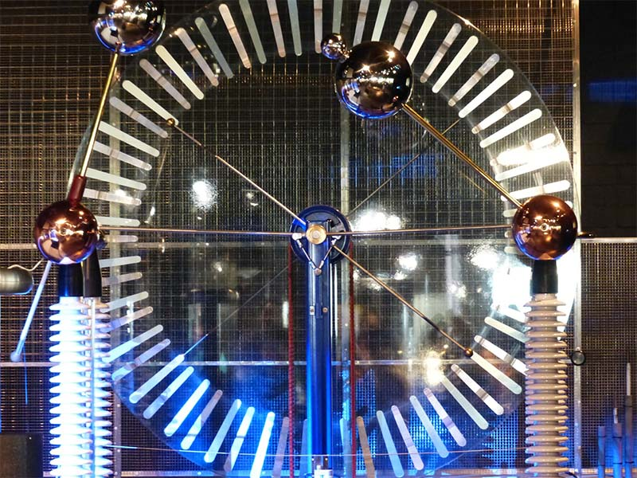

Inducir es hacer una cosa y que ocurra otra cosa como reacción a la primera. Por ejemplo, en electricidad podemos crear una corriente eléctrica, inducida, por un campo magnético (corriente generada como reacción al campo magnético). Por medio de un campo magnético podemos crear una corriente eléctrica llamada "corriente inducida". ¿Qué es la Inducción Eléctrica?
La inducción eléctrica es la generación de electricidad como reacción ( o mediante, o gracias a..) a otra cosa. La forma más común de generar corriente eléctrica es mediante la inducción electromagnética. Esta es la que vamos a estudiar.
La inducción electromagnética es generar corriente eléctrica (inducida) por medio de un campo magnético. Pero... ¿Cómo se hace esto? Empecemos por el principio. ¿Quien Descubrió la Inducción Electromagnética?
Es a Michael Faraday al que se le atribuye el descubrimiento de la inducción electromagnética, el 29 de agosto de 1831.
Basándose en el descubrimiento de Hans Christian Oersted por el que un cable por el que circula una corriente eléctrica tiene propiedades magnéticas (creaba un campo magnético) a su alrededor, Faraday descubrió lo contrario, que un campo magnético variable hace que la electricidad fluya por un circuito eléctrico. El campo magnético variable puede ser un simple imán en movimiento.
Recuerda: se llama campo magnético a la región donde el imán tiene efecto. Esta región se puede representar por líneas, llamadas líneas de campo magnético. Fuera el campo magnético del imán, este no tiene poder de atracción hacia el hierro. Si colocamos un trozo de hierro fuera del campo magnético del imán de la figura de más abajo, el hierro no se vería atraído por el imán. Dentro del campo sí. Moviendo un imán sobre un cable o conductor resulta que se produce una corriente eléctrica por el conductor, debido a que el movimiento del imán produce un campo magnético variable. También se podía mover el conductor por dentro del campo magnético del imán fijo (sin moverse) y se produce corriente eléctrica por el conductor.
Bueno, realmente lo que se genera es una tensión o d.d.p. (diferencia de potencial) entre los extremos del cable o conductor, ya que como deberíamos saber, para que se exista una corriente tiene que ser un circuito cerrado y el conductor es abierto. Lo que si sucede es que al generarse un d.d.p o tensión, si ahora cerramos el cable (unimos sus extremos), entonces si que se produce una corriente eléctrica. Precisamente esta tensión que tenía el conductor es la que hace que se produzca una corriente al cerrar el circuito. Es necesario tener una tensión para crear una corriente por un circuito. Por ejemplo, los bornes (extremos de una pila) tienen tensión en sus extremos, al conectar el circuito a la pila se crea una corriente que circula por el circuito. Si no hay tensión, no hay corriente. Esta tensión se puede llamar d.d.p. o fem (fuerza electromotriz) en física o tensión en Tecnología.
Faraday descubrió la forma de generar una tensión o corriente inducida por un campo magnético y un movimiento. Esto fue un gran descubrimiento, ya que hasta ese momento, la gente sólo había sido capaz de producir corriente eléctrica con una batería. Ahora Faraday había demostrado que el movimiento podría ser convertido en electricidad. Una electricidad inducida por un campo magnético y un movimiento. Esto fue el principio para la construcción de la Dinamo y el Alternador.
Lo que hizo Faraday para crear un circuito, en lugar de un solo cable, fue algo muy sencillo. En lugar de un cable solo, hizo mover por el campo magnético una espira. Como ves ahora serán dos cables los que se mueven dentro del campo magnético, generándose una tensión en sus extremos. Ahora podemos conectar los extremos de la espira a un receptor (una bombilla por ejemplo) y crear un circuito, generándose así, o mejor dicho induciendo una corriente por el circuito.
{kind=link}